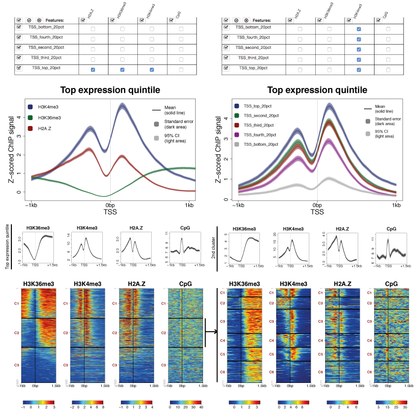

Install SeqPlots Bioconductor package :

View the Main Project on GitHub przemol/seqplots

An interactive tool for visualizing track signals and sequence motif densities along genomic features using average plots and heatmaps

Introduction
The SeqPlots is universal, web browser based tool for plotting average track signal (e.g. reads coverage) and sequence motif density over user specified genomic features. The data are visualized on linear plot, with error estimates as fields, or as series of heatmaps that can be sorted and clustered. The dual-purpose implementation allows running the software locally on desktop or deploying it on server. The unique features of our software are collaboration and data sharing capabilities, as well as ability to store pre-calculated result matrixes, that combine many sequencing experiments and in-silico generated tracks with multiple different features. These binaries can be further used to generate new combination plots on fly, run automated batch operations or share with colleagues, who can adjust their plotting parameters without loading actual tracks and recalculating numeric values.
Mac OS X bundle application
Mac OS X bundle is an easy way to use SeqPlots for Mac OS X users. It contains R binaries pre-installed Bioconductor dependencies. Additionally, the reference genome for Caenorhabditis elegans is included. The sequences for other popular model organisms can be downloaded using graphical user interface.
How to install
Download the compressed application from https://github.com/Przemol/seqplots_osx/zipball/master
Double-click on downloaded file to unzip the contents of archive
Drag and drop SeqPlots.app to Applications folder
How to start
Please refer to user guide.
Bioconductor package in R
The Bioconductor package runs SeqPlots locally on desktop computers from R environment. It is available for Windows, GNU/Linux and Mac OS X operating systems.
How to install
Install R from here.
To install SeqPlots package, start R and enter:
source("http://bioconductor.org/biocLite.R") biocLite("seqplots")
How to start
Please refer to user guide or Bioconductor webpage.
Start using SeqPlots
SeqPlots is easy to start with thanks to intuitive, web browser based graphical user interface. The good place to learn about SeqPlots' workflow is the Quick start guide.
SeqPlots user's guide explains all options and controls, as well as more covers advanced topics, like running SeqPlots as server application. Help about specific SeqPlots controls is available from within the web application, after clicking on orange (?) button.
Live demo
The working demonstration preview of SeqPlots is available on ShinyApps.io: https://seqplots.shinyapps.io/seqplots/
Demo limits:
- the application contains some pre-loaded data (C. elegans genes and histone modifications)
- size of uploaded files is limited to 30MB, please bin or subset your tracks to fit within the limit (due to ShinyApps beta upload limitations)
- only C. elegans genome is available (due ShinyApps beta space limits)
- uploaded files will be deleted after some time